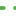

<!doctype html>
<html lang="en">
    <head>
        <meta charset="utf-8">
        <meta http-equiv="X-UA-Compatible" content="IE=edge">
        <meta name="viewport" content="initial-scale=1,user-scalable=no,maximum-scale=1,width=device-width">
        <meta name="mobile-web-app-capable" content="yes">
        <meta name="apple-mobile-web-app-capable" content="yes">
        <link rel="stylesheet" href="css/leaflet.css">
        <link rel="stylesheet" href="css/qgis2web.css"><link rel="stylesheet" href="css/fontawesome-all.min.css">
        <link rel="stylesheet" href="css/leaflet-control-geocoder.Geocoder.css">
        <style>
        #map {
            width: 2673px;
            height: 1143px;
        }
        </style>
        <title></title>
    </head>
    <body>
        <div id="map">
        </div>
        <script src="js/qgis2web_expressions.js"></script>
        <script src="js/leaflet.js"></script>
        <script src="js/leaflet.rotatedMarker.js"></script>
        <script src="js/leaflet.pattern.js"></script>
        <script src="js/leaflet-hash.js"></script>
        <script src="js/Autolinker.min.js"></script>
        <script src="js/rbush.min.js"></script>
        <script src="js/labelgun.min.js"></script>
        <script src="js/labels.js"></script>
        <script src="js/leaflet-control-geocoder.Geocoder.js"></script>
        <script src="data/ne_10m_reefs_0.js"></script>
        <script src="data/ne_10m_land_1.js"></script>
        <script>
        var highlightLayer;
        function highlightFeature(e) {
            highlightLayer = e.target;
            highlightLayer.openPopup();
        }
        var map = L.map('map', {
            zoomControl:true, maxZoom:28, minZoom:1
        }).fitBounds([[-43.98170072645947,56.63821443779423],[33.595047188946715,238.23987410654965]]);
        var hash = new L.Hash(map);
        map.attributionControl.setPrefix('<a href="https://github.com/tomchadwin/qgis2web" target="_blank">qgis2web</a> &middot; <a href="https://leafletjs.com" title="A JS library for interactive maps">Leaflet</a> &middot; <a href="https://qgis.org">QGIS</a>');
        var autolinker = new Autolinker({truncate: {length: 30, location: 'smart'}});
        var bounds_group = new L.featureGroup([]);
        function setBounds() {
        }
        function pop_ne_10m_reefs_0(feature, layer) {
            layer.on({
                mouseout: function(e) {
                    if (typeof layer.closePopup == 'function') {
                        layer.closePopup();
                    } else {
                        layer.eachLayer(function(feature){
                            feature.closePopup()
                        });
                    }
                },
                mouseover: highlightFeature,
            });
            var popupContent = '<table>\
                    <tr>\
                        <td colspan="2">' + (feature.properties['featurecla'] !== null ? autolinker.link(feature.properties['featurecla'].toLocaleString()) : '') + '</td>\
                    </tr>\
                    <tr>\
                        <td colspan="2">' + (feature.properties['min_zoom'] !== null ? autolinker.link(feature.properties['min_zoom'].toLocaleString()) : '') + '</td>\
                    </tr>\
                </table>';
            layer.bindPopup(popupContent, {maxHeight: 400});
        }

        function style_ne_10m_reefs_0_0() {
            return {
                pane: 'pane_ne_10m_reefs_0',
                opacity: 1,
                color: 'rgba(84,176,74,1.0)',
                dashArray: '',
                lineCap: 'round',
                lineJoin: 'round',
                weight: 3.0,
                fillOpacity: 0,
                interactive: true,
            }
        }
        map.createPane('pane_ne_10m_reefs_0');
        map.getPane('pane_ne_10m_reefs_0').style.zIndex = 400;
        map.getPane('pane_ne_10m_reefs_0').style['mix-blend-mode'] = 'normal';
        var layer_ne_10m_reefs_0 = new L.geoJson(json_ne_10m_reefs_0, {
            attribution: '',
            interactive: true,
            dataVar: 'json_ne_10m_reefs_0',
            layerName: 'layer_ne_10m_reefs_0',
            pane: 'pane_ne_10m_reefs_0',
            onEachFeature: pop_ne_10m_reefs_0,
            style: style_ne_10m_reefs_0_0,
        });
        bounds_group.addLayer(layer_ne_10m_reefs_0);
        map.addLayer(layer_ne_10m_reefs_0);
        function pop_ne_10m_land_1(feature, layer) {
            layer.on({
                mouseout: function(e) {
                    if (typeof layer.closePopup == 'function') {
                        layer.closePopup();
                    } else {
                        layer.eachLayer(function(feature){
                            feature.closePopup()
                        });
                    }
                },
                mouseover: highlightFeature,
            });
            var popupContent = '<table>\
                    <tr>\
                        <td colspan="2">' + (feature.properties['featurecla'] !== null ? autolinker.link(feature.properties['featurecla'].toLocaleString()) : '') + '</td>\
                    </tr>\
                    <tr>\
                        <td colspan="2">' + (feature.properties['scalerank'] !== null ? autolinker.link(feature.properties['scalerank'].toLocaleString()) : '') + '</td>\
                    </tr>\
                    <tr>\
                        <td colspan="2">' + (feature.properties['min_zoom'] !== null ? autolinker.link(feature.properties['min_zoom'].toLocaleString()) : '') + '</td>\
                    </tr>\
                </table>';
            layer.bindPopup(popupContent, {maxHeight: 400});
        }

        var pattern_ne_10m_land_1_0 = new L.StripePattern({
            weight: 0.5,
            spaceWeight: 1.0,
            color: '#000000',
            opacity: 1.0,
            spaceOpacity: 0,
            angle: 360
        });
        pattern_ne_10m_land_1_0.addTo(map);
        function style_ne_10m_land_1_0() {
            return {
                pane: 'pane_ne_10m_land_1',
                stroke: false,
                fillOpacity: 1,
                fillPattern: pattern_ne_10m_land_1_0,
                interactive: true,
            }
        }
        map.createPane('pane_ne_10m_land_1');
        map.getPane('pane_ne_10m_land_1').style.zIndex = 401;
        map.getPane('pane_ne_10m_land_1').style['mix-blend-mode'] = 'normal';
        var layer_ne_10m_land_1 = new L.geoJson(json_ne_10m_land_1, {
            attribution: '',
            interactive: true,
            dataVar: 'json_ne_10m_land_1',
            layerName: 'layer_ne_10m_land_1',
            pane: 'pane_ne_10m_land_1',
            onEachFeature: pop_ne_10m_land_1,
            style: style_ne_10m_land_1_0,
        });
        bounds_group.addLayer(layer_ne_10m_land_1);
        map.addLayer(layer_ne_10m_land_1);
        var osmGeocoder = new L.Control.Geocoder({
            collapsed: true,
            position: 'topleft',
            text: 'Search',
            title: 'Testing'
        }).addTo(map);
        document.getElementsByClassName('leaflet-control-geocoder-icon')[0]
        .className += ' fa fa-search';
        document.getElementsByClassName('leaflet-control-geocoder-icon')[0]
        .title += 'Search for a place';
        var baseMaps = {};
        L.control.layers(baseMaps,{' ne_10m_land': layer_ne_10m_land_1,' ne_10m_reefs': layer_ne_10m_reefs_0,},{collapsed:false}).addTo(map);
        setBounds();
        </script>
    </body>
</html>
